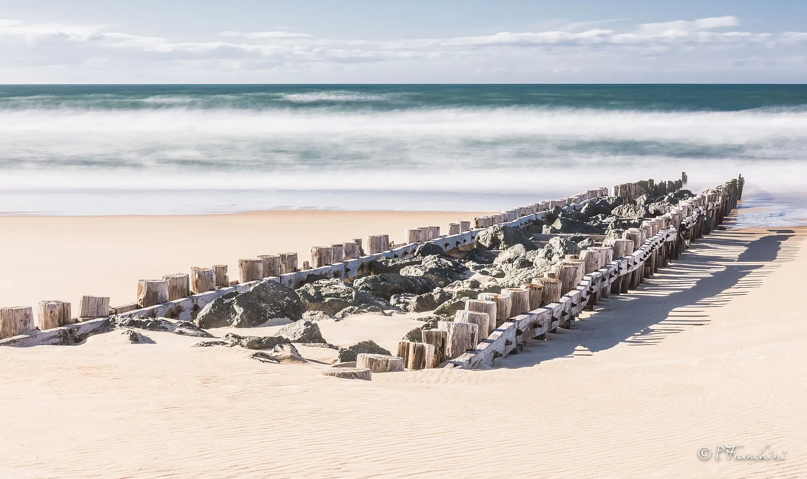

Le Penon — Seignosse
Landes, France · surf

Plage du Penon, à Seignosse, au nord des Bourdaines. Un poste de secours y fonctionne en haute saison.
- Lieu
- Landes, France
- Niveau
- Variable selon les conditions
- Activités
- surf
- Type d'eau
- Mer / océan
- Coordonnées
- 43.71, -1.44 (position approximative du secteur)
Dangers à connaître
- Baïnes et courants parfois forts sur les plages de Seignosse, signale Surf-Report.
- Poste de secours en haute saison seulement : hors saison, ne surfe pas seul.
Le conseil d'Ocean Buddy
Repère les baïnes depuis la plage et mets-toi à l’eau près du poste de secours quand il est ouvert.
Ouvrir dans Ocean Buddy Télécharger sur l'App Store
Source : Fiche Ocean Buddy · octobre 2026 · d’après Belambra, Tourisme Landes et Surf-Report · à vérifier localement.